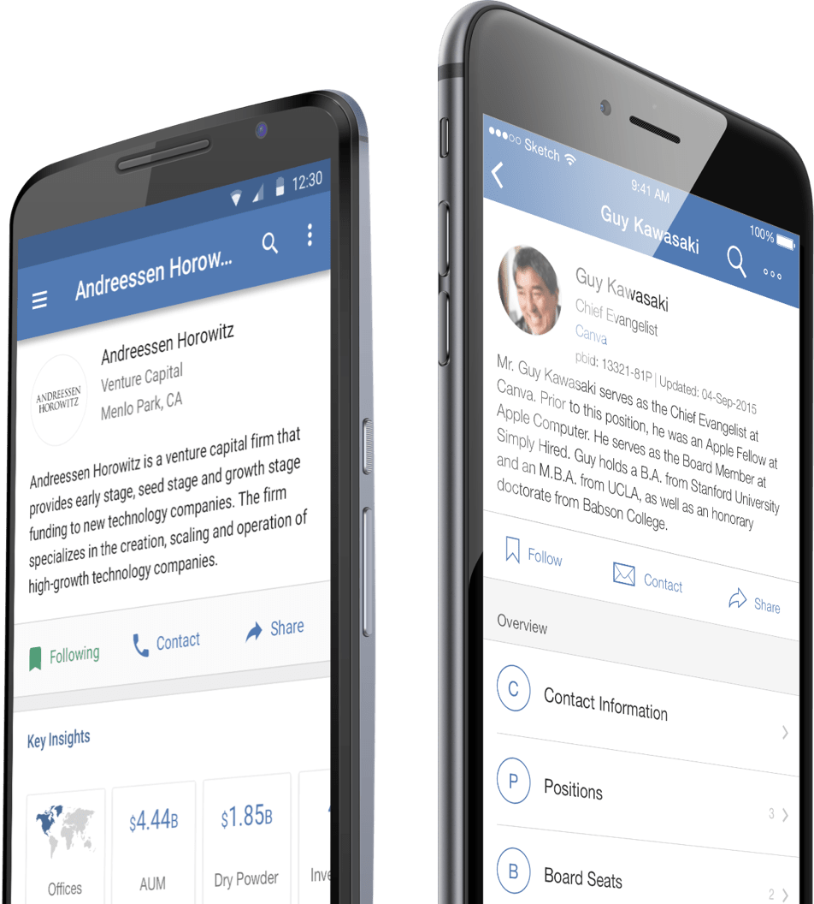
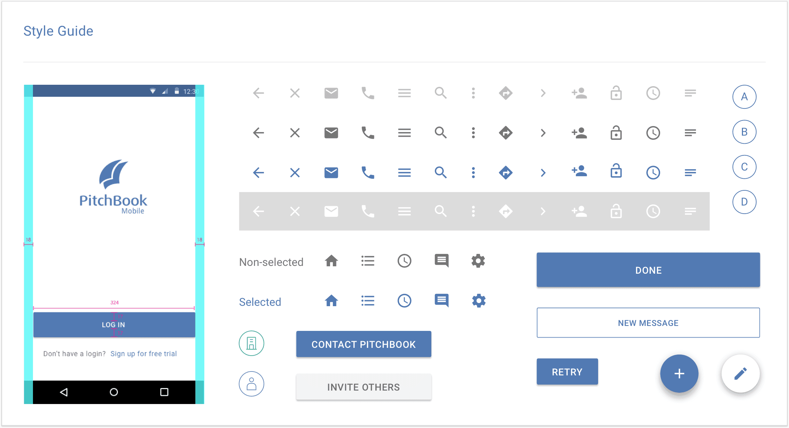
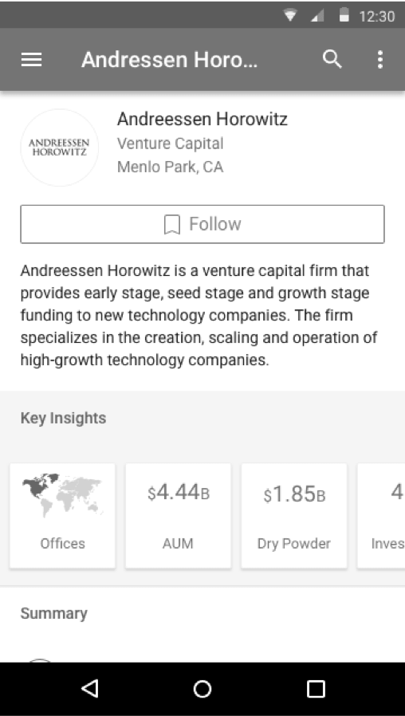
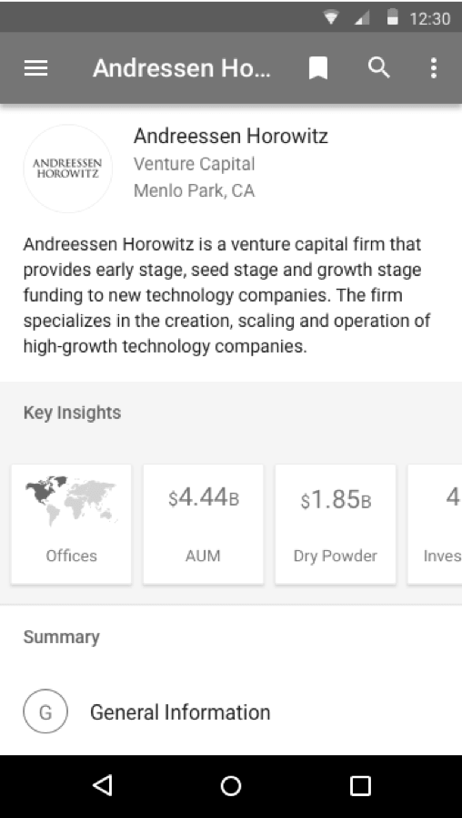
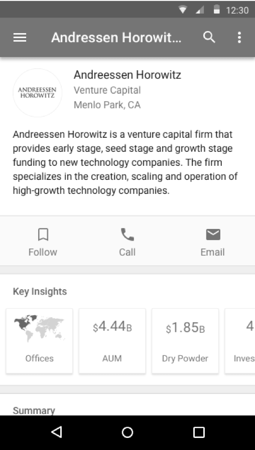
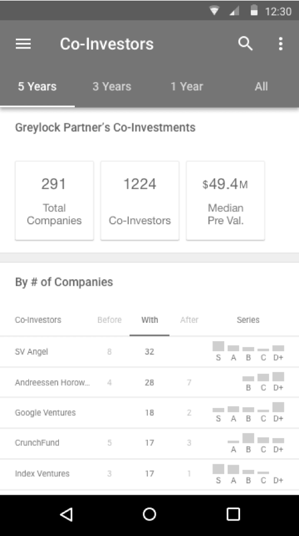
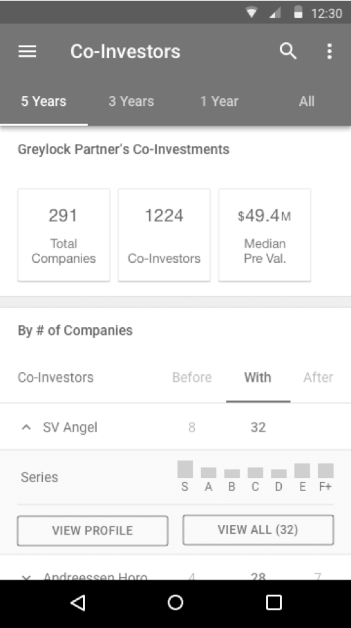
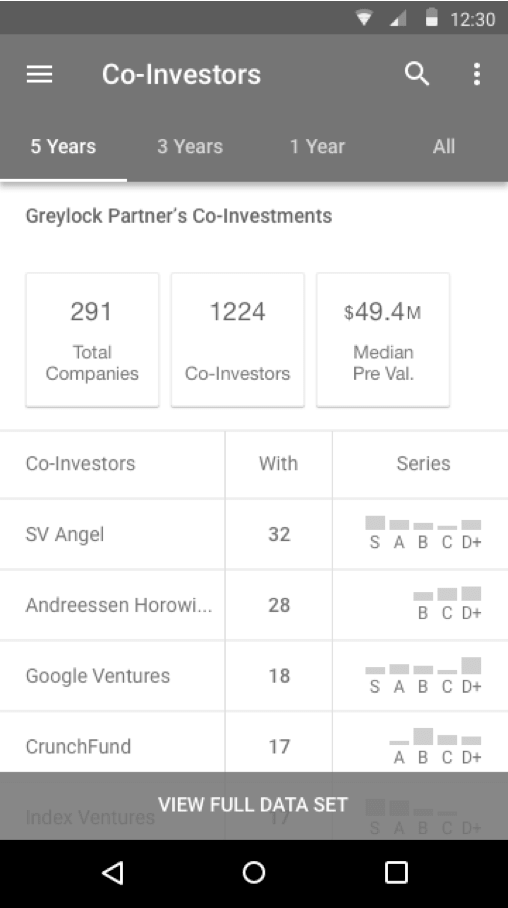
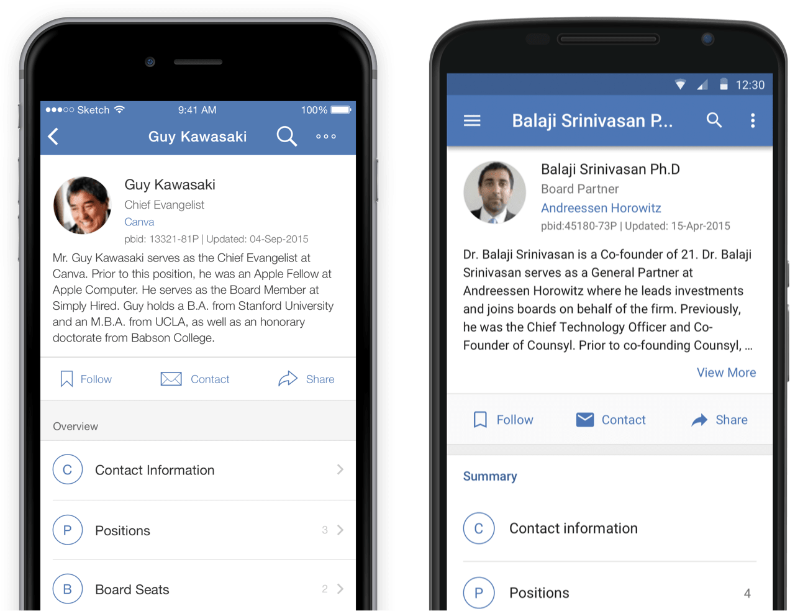

As the lead mobile designer, I lead the redesign of our mobile application, converting the app to full native iOS and Android experiences.

PitchBook mobile gives our clients access to our database anywhere, any time, so they can quickly prepare their meeting with deal and fund data, easily reference their saves searches and history, and access contact information and directly reach out to deal makers and executives.
PB Mobile's primary users are higher level managing directors, who are constantly traveling and in meetings.
We optimized the application to allow users to quickly find a company, get high level information, and the ability to tag and follow up later.
The old mobile app was build on Sencha, a javascript framework that allowed developers to build websites that function like mobile apps.
We want our mobile app to grow with the web platform and take advantage of the native features, such as geolocation and push notification.
Designing for the native OS allows us to use existing guidelines to provide an intuitive user experience.
We optimized the mobile experience by using standard iOS and Android conventions, and made sure they feel natural on its native devices.
Inspired by Material Design, I came up with PitchBook Mobile's own design language

Just a couple out of a handful of iterations I went through
We identified three of the most commonly used actions and made them more discoverable on profiles.






We tried multiple ways of showing investor relationship on mobile, but later found out that "With" is the most commonly viewed relationship.
After talking with clients and looking into their usage patterns, we learned that people with high mobile usage tend to be high level directors who are constantly traveling and in meetings.
One of the primary tasks on mobile is to flag a company so they can follow up with it later or share it with their peers. To accommodate this usage, we dedicated a section to make these options prominent.

High level managers such as managing directors (MD) and general partners (GP) are those who run the firm, make the investment decisions, and sit on company boards. They have busy schedules and are in and out of meetings. They rely heavily on PitchBook mobile to quickly prepare for meetings.
To better serve these MDs and GPs, we came up with the key insights feature, so they can quickly swipe through data points that can immediately provide them insights on a company.
The PitchBook platform has a comprehensive relational structure that allows users to easily navigate from entity to entity, but it also runs the risk of having users get lost in the sea of information. In addition, with so many different types of entities in the database, displaying long titles can be troublesome.
To solve these two problems, I came up with an interaction that expands the app bar when users tap on it. The expanded app bar gives room for both the breadcrumb and the full title.